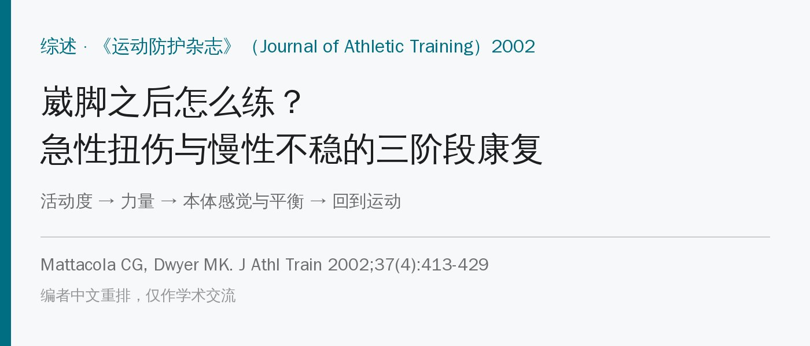
🔖原文信息（编者中文重排）
📚 文献信息
▪ Mattacola CG, Dwyer MK. Rehabilitation of the ankle after acute sprain or chronic instability. J Athl Train. 2002;37(4):413-429.
▪ 作者来自美国肯塔基大学
▪ 综述 + 作者推荐的结构化康复方案
崴脚太常见，很多人觉得“养几天就好”。但处理不当，会留下活动度变小、反复疼痛肿胀，最后变成慢性踝关节不稳——总觉得脚“打软”、反复崴。
作者认为慢性不稳来自三方面：神经（本体感觉、反射、肌肉反应时间）、肌肉（力量、爆发力、耐力）和机械（韧带松弛）。康复就要三方面都管。
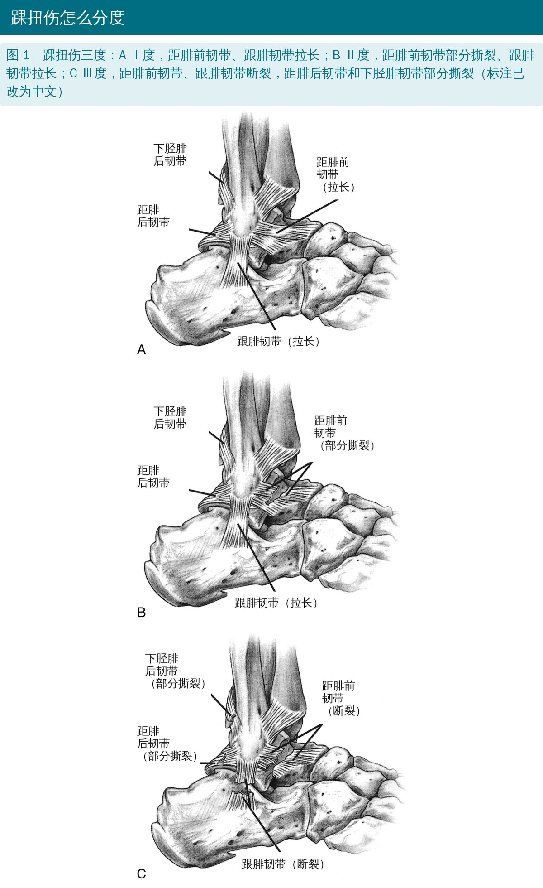
🔖原文图 1
• 本体感觉会掉：Tropp 等追踪 127 名足球运动员，单腿站稳定性测试异常的人，下个赛季崴脚比例 42%，正常的只有 11%
• 崴脚 2 周后，部分Ⅱ、Ⅲ度扭伤的人腓神经肌电异常；内翻伤后 4～8 天，腓浅、腓深神经运动传导速度下降
• 力量方面结论不一：有人发现腓骨肌无力，有人没发现；外翻/内翻力量比也有争议
组织愈合的时间表决定了怎么练：第 1～5 天以保护为主，第 6～42 天在保护下逐步加应力，让新生胶原沿受力方向排列。
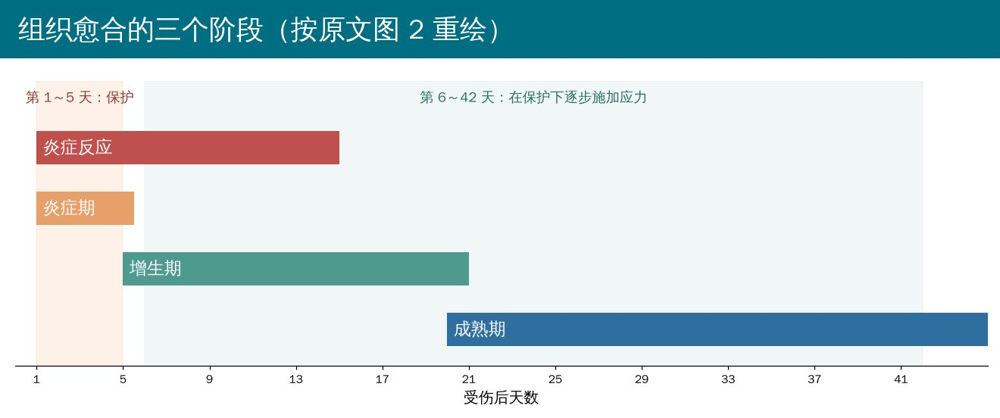
🔖按原文图 2 重绘
作者的核心观点：不要长时间制动。系统综述显示，和单纯固定相比，功能性治疗回去上班的人更多、更快，持续肿胀、客观不稳和活动度受限的人更少，满意度更高。Ⅰ、Ⅱ度扭伤属于稳定型，受伤当天就可以开始功能性康复。
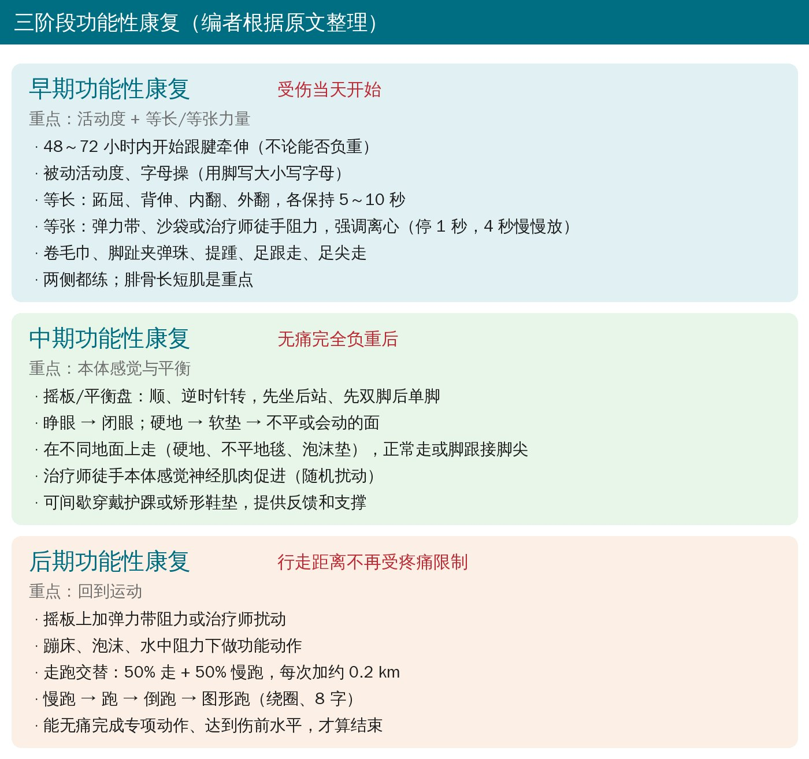
🔖三阶段总览
• 先恢复活动度：受伤后 48～72 小时内开始跟腱牵伸，不管能不能负重——组织受伤后容易挛缩
• 被动活动度：治疗师轻压帮助牵伸；字母操：用脚尖在空中写大小写字母，可配合冷敷或热敷
• 等长收缩：顶墙、顶地或用另一只脚做阻力，跖屈、背伸、内翻、外翻四个方向，各保持 5～10 秒
• 等张收缩：弹力带、沙袋或治疗师给阻力；强调离心——向心收缩后停 1 秒，再用 4 秒慢慢放回
• 腓骨长短肌是重点，但所有踝周肌肉都要练，而且两侧都练（只练一侧，交叉效应只有 1.5%～3.5%）
• 其他：卷毛巾、脚趾夹弹珠、提踵、足跟走、足尖走
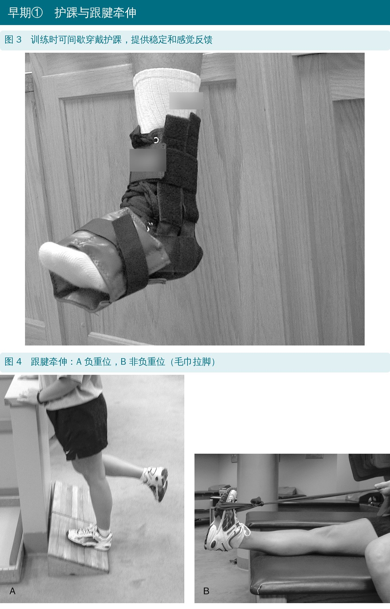
🔖原文图 3、4
作者特别提到：很多人拿弹力带做几百次，目标肌肉根本没练累。他们更推荐治疗师徒手阻力：每个方向 10～12 次，每次最大用力保持 3～5 秒，在无痛范围内做，能保证肌肉真的被加满负荷。进阶时让运动员抵抗随机扰动。
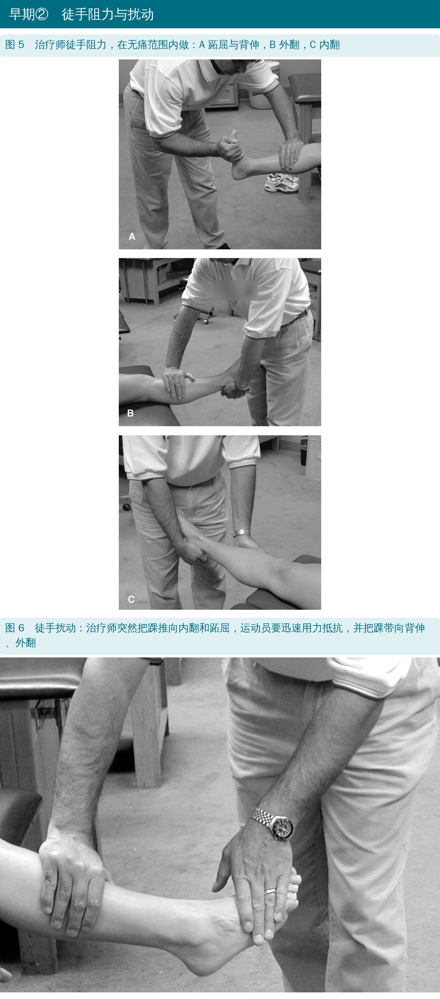
🔖原文图 5、6
没时间做徒手阻力时，用重量比用弹力带好，按 DAPRE（每日调整渐进抗阻）进阶：每级 4 组 × 10 次、每组加重，第 4 组能以正确动作做满 10 次就升一级（完整表格见文末附录）。抗阻训练每天 2 次，每次每个方向 2～3 组 × 10～12 次。
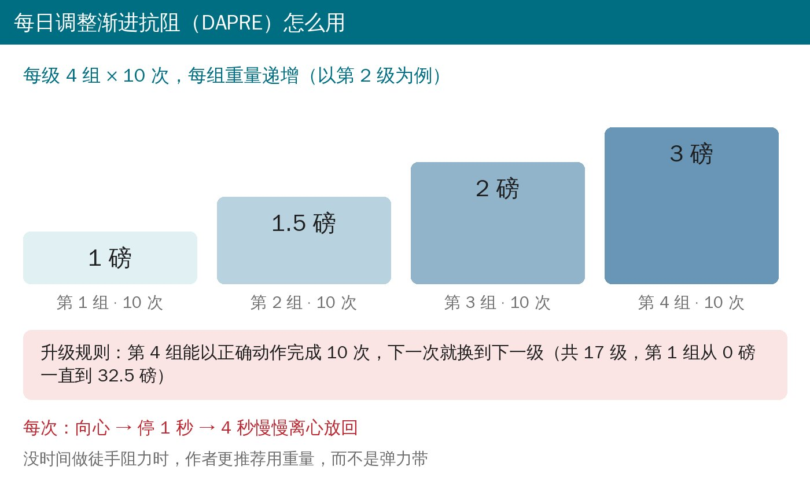
🔖DAPRE 示意
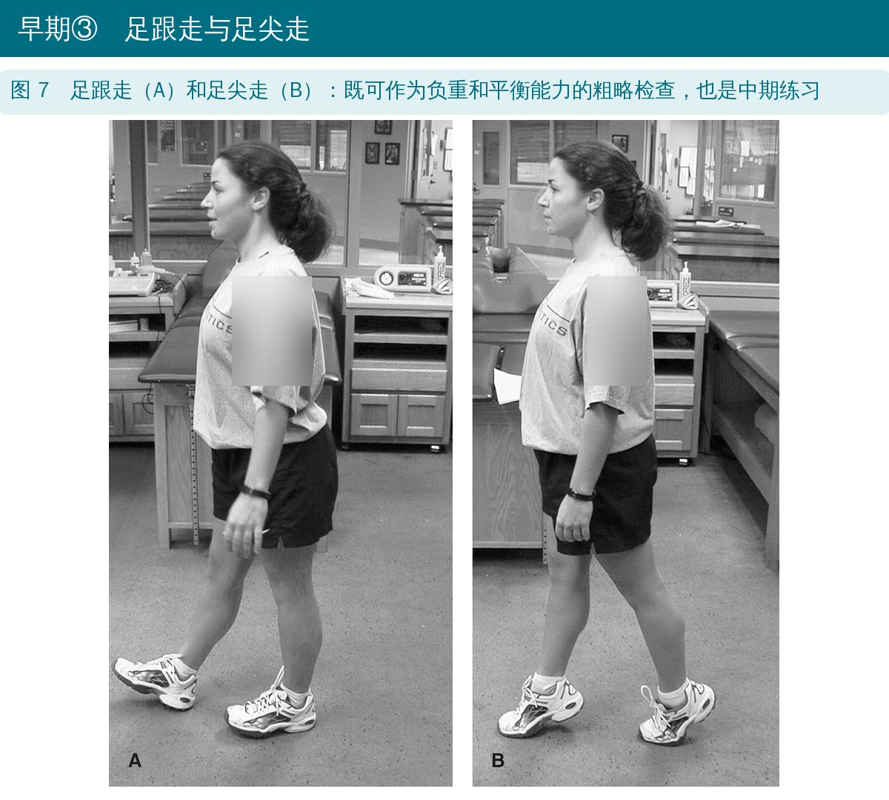
🔖原文图 7
力量要持续监测：等速测试是常用方法，更便宜的手持测力计常被忽视，其实也能稳定地追踪。
能无痛完全负重之后开始。最简单的工具是摇板：单脚站上去，转移重心让板边沿着圆圈滚动。
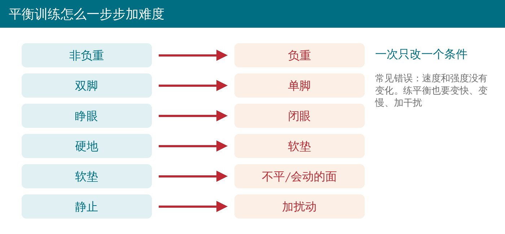
🔖平衡进阶
• 圆形摇板：顺、逆时针转，先非负重再负重，先双脚再单脚；5～10 次，每天 2～3 次
• 不同地面行走：硬地、不平地毯、泡沫垫，正常走或脚跟接脚尖走 6～15 米，每天 5～10 次
• 徒手本体感觉神经肌肉促进：治疗师给不同阻力和随机扰动，运动员按功能模式活动足部；5～20 次，每天 1～2 次
• 治疗师把踝摆到某个角度，再让运动员主动、被动重现这个角度
• 常见错误：练平衡时速度和强度一成不变
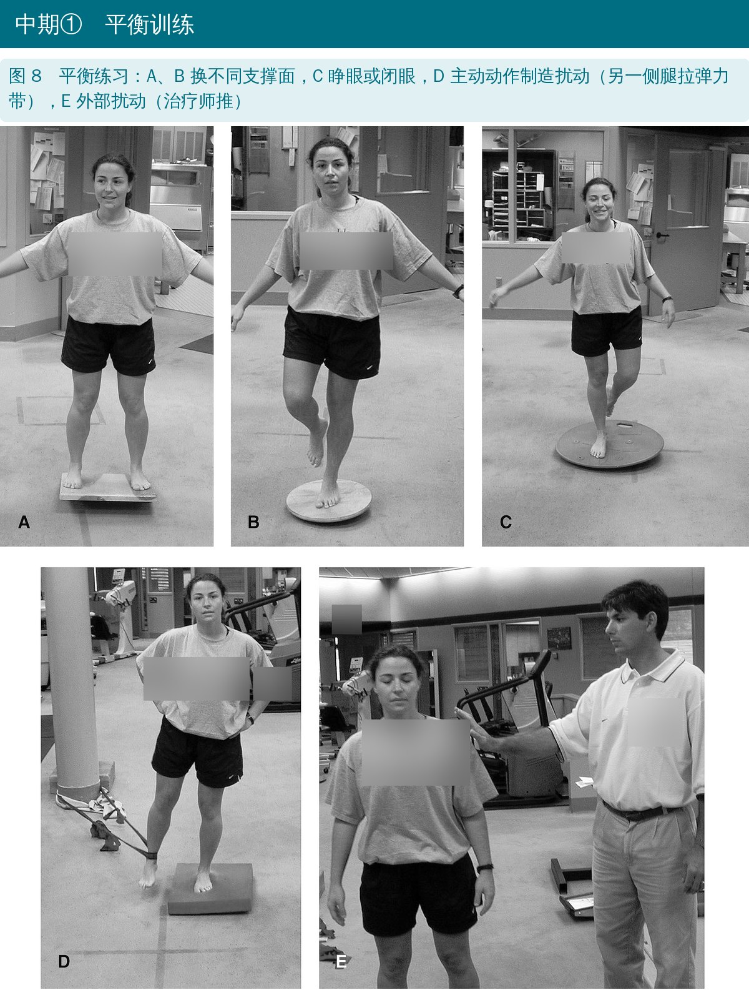
🔖原文图 8
• 摇板上加弹力带阻力或治疗师轻推；交替睁眼、闭眼，换不同地面
• 在蹦床、泡沫、水中阻力下做功能动作，提高速度变化
• 走跑交替：行走距离不再受疼痛限制时，开始 50% 走 + 50% 慢跑，每次增加约 0.2 km（1/8 英里）
• 同样标准下进阶到慢跑 + 跑、倒跑、图形跑（绕圈、8 字）
• 终点：能无痛完成专项动作，并达到伤前水平
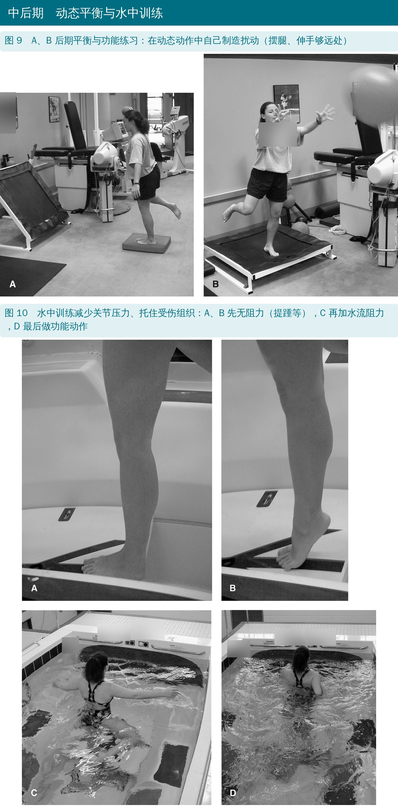
🔖原文图 9、10
• 护踝除了机械支撑，还能增加本体感觉输入：戴护踝后，受伤侧的位置觉甚至比不戴的健侧还好
• 研究显示，戴护踝的军校学员踝伤减少到约 1/3，有既往崴脚史的运动员崴脚减少到约 1/5
• 作者建议：康复训练中间歇戴护踝（氯丁橡胶、软壳或硬壳均可），提供反馈、压迫和支撑——但这是基于对文献的临床解读，疗效还需要验证
• 矫形鞋垫：可减少急性崴脚后的身体晃动，部分研究显示能减轻慢跑时疼痛；作者建议急性和亚急性期使用，有前足或后足力线异常的人所有活动都用
• 慢性不稳人群用鞋垫的证据还很少
• 方案本身没有验证过：作者明确说，这是基于既往经验和实证资料的结构化模板，到底需要多少次治疗、哪种组合、多大运动量，还缺少系统的结果研究
• 附录汇总的 15 项研究里，有用健康人群的，有单个案例的，样本量和训练方式差别很大
• 平衡训练能否预防受伤并不一致：Söderman 等在女足里做摇板训练，受伤数量没减少，“重大”伤害的发生率反而在训练组更高
• 这是 2002 年的文章，之后有更多随机对照试验和指南（如国际踝关节联盟的共识），实际应用时要结合新证据
原文里对不上的地方：
• 附录 Wester 等研究那一行，留下了一句编辑批注 “说训练 12 周，但只给了 6 周？”，直接印在了正式发表的表格里
• 附录把 Gauffin 等的摇板训练归为“力量训练”，实际是平衡训练
• 表 2 脚注把 Knight 的 DAPRE 标为文献 67、Perrin 与 Gieck 标为 68；正文却写成 68 和 69，而 67 在正文里是“交叉效应”那篇
• 表 2 第 4 组的重量递增不规律：第 3～5 级第 1 组为 2、3、4 磅，第 4 组却跳成 5、8、10 磅
• Kerkhoffs 在同一段里一处拼成“Kerkoffs”
• Ⅰ、Ⅱ度崴脚别长期固定，受伤当天就开始活动度练习，48～72 小时内开始跟腱牵伸
• 力量训练要真的“累”：徒手阻力每次最大用力 3～5 秒，或用重量按 DAPRE 进阶，强调 4 秒离心
• 腓骨肌重点练，但四个方向、两侧都要练
• 无痛完全负重后加平衡：非负重 → 负重，双脚 → 单脚，睁眼 → 闭眼，硬地 → 软垫 → 不平面，再加扰动
• 平衡训练也要改变速度和强度
• 走路不再疼了，开始走跑交替，每次加约 0.2 km
• 训练中可以间歇戴护踝，力线异常的人考虑矫形鞋垫
原文表 1 早期功能性康复建议
| 项目 | 做法 | 频率与时长 | 说明 |
|---|---|---|---|
| 活动度：被动活动 | 治疗师轻压帮助牵伸 | 无痛牵伸 15～30 秒 × 10 次，每天 3～5 次 | 肢体放在非重力位并加压包扎 |
| 活动度：跟腱牵伸（非负重） | 用毛巾把脚拉向脸的方向 | 无痛牵伸 15～30 秒 × 10 次，每天 3～5 次 | 同上 |
| 活动度：跟腱牵伸（负重） | 站立，脚跟着地，屈膝 | 无痛牵伸 15～30 秒，每天 3～5 次 | |
| 活动度：字母操 | 用脚写大小写字母，多平面活动 | 每小时 2～3 次，每天 4～5 次 | 可配合冷敷或热敷 |
| 等长：跖屈、背伸、内翻、外翻 | 顶墙、顶地或用另一只脚做阻力；分别向下、向上、向内、向外用力 | 每次保持 5～10 秒，每个方向 5～10 次，每天 3～5 次 | 在无痛范围内做 |
| 等张：跖屈、背伸、内翻、外翻 | 另一只脚、弹力带、沙袋或治疗师做阻力 | 向心和离心各 4～10 秒，每个方向 2 组 × 10 次，每天 3～5 次 | 全范围、非负重位，包含向心和离心 |
| 卷毛巾、夹弹珠 | 脚趾把毛巾卷向身体；用脚趾夹弹珠等小物件 | 2 组 × 10 次，每天 3～5 次 | 上班或在家都能做 |
| 提踵、足跟走、足尖走 | 踮脚抬起身体；用脚尖、脚跟向前和向后走 | 3 组 × 10 次；步行距离按耐受增加 | 负重位，用自身体重做阻力 |
注：可在不同外部支撑下练习，以刺激感觉和本体感觉反馈；半硬式矫形器可提供体感输入和中立对线。
原文表 2 力量训练进阶（DAPRE 改良版，单位：磅；括号内为千克）
| 级别 | 第 1 组 10 次 | 第 2 组 10 次 | 第 3 组 10 次 | 第 4 组 10 次 |
|---|---|---|---|---|
| 1 | 0 | 0.5 (0.23) | 1 (0.45) | 1.5 (0.68) |
| 2 | 1 (0.45) | 1.5 (0.68) | 2 (0.91) | 3 (1.36) |
| 3 | 2 (0.91) | 3 (1.36) | 4 (1.81) | 5 (2.27) |
| 4 | 3 (1.36) | 4.5 (2.04) | 6 (2.72) | 8 (3.63) |
| 5 | 4 (1.81) | 6 (2.72) | 8 (3.63) | 10 (4.54) |
| 6 | 5 (2.27) | 7.5 (3.40) | 10 (4.54) | 15 (6.80) |
| 7 | 7.5 (3.40) | 11.25 (5.10) | 15 (6.80) | 20 (9.07) |
| 8 | 10 (4.54) | 15 (6.80) | 20 (9.07) | 25 (11.34) |
| 9 | 12.5 (5.67) | 18.75 (8.51) | 25 (11.34) | 30 (13.61) |
| 10 | 15 (6.80) | 22.5 (10.21) | 30 (13.61) | 35 (15.88) |
| 11 | 17.5 (7.94) | 26.25 (11.91) | 35 (15.88) | 40 (18.14) |
| 12 | 20 (9.07) | 30 (13.61) | 40 (18.14) | 45 (20.41) |
| 13 | 22.5 (10.21) | 33.75 (15.31) | 45 (20.41) | 50 (22.68) |
| 14 | 25 (11.34) | 37.5 (17.01) | 50 (22.68) | 55 (24.95) |
| 15 | 27.5 (12.47) | 41.25 (18.71) | 55 (24.95) | 60 (27.22) |
| 16 | 30 (13.61) | 45 (20.41) | 60 (27.22) | 65 (29.48) |
| 17 | 32.5 (14.74) | 48.75 (22.11) | 65 (29.48) | 70 (31.75) |
改编自 Knight 的 DAPRE 方案（Perrin 与 Gieck 修订）。第 4 组能以正确动作完成 10 次时，进入下一级。
原文表 3 中期功能性康复：本体感觉训练
| 项目 | 做法 | 频率与时长 | 说明 |
|---|---|---|---|
| 圆形摇板 | 顺、逆时针转动，非负重和负重，双脚和单脚 | 5～10 次，每天 2～3 次 | 可睁眼或闭眼，可加或不加阻力 |
| 不同地面行走 | 正常走或脚跟接脚尖，走过硬地、不平地毯、不同泡沫垫等 | 6.1～15.2 米，每天 5～10 次 | 同上 |
| 徒手本体感觉神经肌肉促进 | 运动员按功能模式活动足部，治疗师给不同阻力和随机扰动 | 5～20 次，每天 1～2 次 | 可改变速度和阻力，刺激感觉反馈 |
注：徒手力量训练按改良的每日调整抗阻方法进阶。
原文表 4 后期功能性康复：回到运动
| 项目 | 做法 | 频率与时长 | 说明 |
|---|---|---|---|
| 摇板练习 | 在摇板上保持平衡，加弹力带阻力或治疗师轻微扰动 | 5～20 次，每天 1～2 次 | 换不同地面、交替睁眼闭眼来加难度 |
| 不同地面 + 阻力下的功能练习 | 在蹦床、泡沫、水中阻力等不同地面做功能动作 | 5～20 次，每天 1～2 次 | 在不稳定面上做专项动作、改变动作速度 |
| 走—慢跑 | 50% 走 + 50% 慢跑：直线、向前、向后、图形跑 | 每次增加 1/8 英里（0.2 km） | 加强度，加入专项训练 |
| 慢跑—跑 | 50% 慢跑 + 50% 跑：直线、向前、向后、图形跑 | 每次增加 1/8 英里（0.2 km） | 同上 |
原文附录 急性扭伤与慢性踝关节不稳的康复研究
| 研究 | 训练方案 | 结果 |
|---|---|---|
| Tropp 等（1984） | 平衡训练：单腿站，每条腿 15 分钟，每天 1 次 | 急性与非急性、贴扎与不贴扎无差异；训练前后有显著变化；“打软”感改善 |
| Tropp 与 Askling（1985） | 平衡盘上单腿站：第 1～10 周每脚 10 分钟、每周 5 次；第 11～20 周每脚 5 分钟、每周 3 次 | 10 周平衡盘训练改善了等速旋前肌力和姿势控制 |
| Gauffin 等（1988） | 原文标为“力量训练”：只练不稳侧，平衡盘 10 分钟，每周 5 次，共 8 周 | 身体晃动减少，姿势修正模式恢复 |
| Hoffman 与 Payne（1995） | 平衡平台：每周 3 次 × 10 周，每次 10 分钟，5 次 × 40 秒，每 10 秒换顺逆时针 | 健康人身体晃动减少 |
| Wester 等（1996） | 第 1～3 周每天 15 分钟：摇板前后、左右各 10 次（15 秒，休息 10 秒），画圈 5 次（60 秒，休息 20 秒）；第 4～6 周：屈膝重复上述动作、单腿站、闭眼单腿站。表中注“说训练 12 周，但只给了 6 周？” | 训练组再扭伤和慢性不稳更少；无痛恢复日常活动的时间、血肿和水肿消退速度无差异 |
| Mattacola 与 Lloyd（1997） | 每周 3 次 × 6 周；力量：跖屈、背伸、外翻、内翻各 3 组 × 10 次，徒手阻力 3 秒；本体感觉：平衡板单腿站 3 组 × 25 次 | 动态平衡能力改善（单个案设计） |
| Bernier 与 Perrin（1998） | 6 周协调训练：每周延长每项时间（15 秒→30 秒），从固定地面睁眼、闭眼、捡东西，到倾斜板各方向、摇板，最后加功能性跳 | 前后、左右平衡评分改善；晃动指数和关节位置觉无变化 |
| Docherty 等（1998） | 6 周弹力带：每周 3 次、每次 10 分钟，跖屈、背伸、外翻、内翻；每 2 周换更重的弹力带，组数 3×10 与 4×10 交替 | 背伸和外翻力量提高，内翻和跖屈位置觉改善 |
| Holme 等（1999） | 协调训练：每次 1 小时、每周 2 次、约 6 周；双腿平衡、8 字跑、用足外侧和内侧站（睁眼、闭眼） | 伤后 6 周两侧力量和姿势控制有差异，4 个月后两组都恢复；12 个月时训练组再伤更少 |
| Kern-Steiner 等（1999） | 减重技术，共 6 次课：双腿蹲、提踵、单腿跳、走跑、侧滑、牵伸、单腿蹲，逐次提高速度和体重负荷比例（如走跑 2.0→4.0 m/s，单腿蹲 77%→103% 体重） | 主动活动度、无痛等长力量、单腿垂直力和单腿跳成绩提高，无痛回到全部活动（单个案例） |
| Blackburn 等（2000） | 力量组：弹力带、自由重量、提踵各 3 组 × 10 次；本体感觉组：弹力带踢腿、四方格跳、单腿站拍球、平衡平台；混合组两者结合 | 静态平衡无差异；所有训练组半动态和动态平衡优于对照，组间无差异（健康人） |
| Söderman 等（2000） | 平衡板：每条腿每个动作 3 × 15 秒，每天 10～15 分钟 × 30 天，之后每周 3 次至赛季结束；单腿站双臂侧举、抱胸、拍球或对墙抛球、另一腿空中画图形 | 下肢损伤的数量、发生率、类型两组无差异；“重大”损伤发生率训练组更高；有既往伤史者，对照组再伤或新伤更多 |
| Hess 等（2001） | 敏捷梯训练 4 周，每周 3 次、每次 20 分钟；热身 3～5 分钟后做 7 种步法，间隔休息 15 秒 | 慢性不稳者身体晃动无显著变化，但自觉更稳、活动更好 |
| Matsusaka 等（2001） | 平衡盘单腿站尽量保持，每天 10 分钟、每周 5 次 × 10 周；一组从外踝到足底贴扎，一组不贴 | 所有训练者晃动改善；贴扎组早 2 周改善，可能因感觉输入增加 |
| Osborne 等（2001） | 只练受伤侧，平衡盘每天 15 分钟 × 8 周 | 两侧胫前肌反应潜伏期都缩短，提示本体感觉存在交叉效应 |
注：原文附录中的器材品牌与公司名此处略去。
欢迎关注悦美力公众号，获取更多物理治疗的专业知识！
📄参考文献：
Mattacola CG, Dwyer MK. Rehabilitation of the ankle after acute sprain or chronic instability. J Athl Train. 2002;37(4):413-429.
原文版权归美国国家运动防护师协会所有，PDF 未标注知识共享协议；原文图 2 为经授权转载。本文仅为学术交流用的中文解读，照片引自原文图 3～10（编者加中文标注，衣服、护具、袜子与墙面文字已模糊），原文图 1 标注改为中文，图 2 按原图重绘，三阶段总览、DAPRE 示意与平衡进阶卡为编者中文绘制，表格为编者翻译，如有侵权请联系删除。